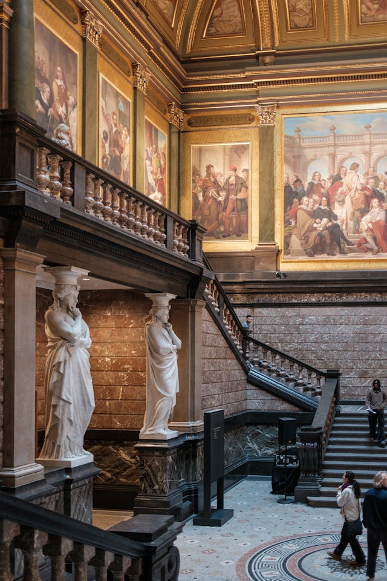
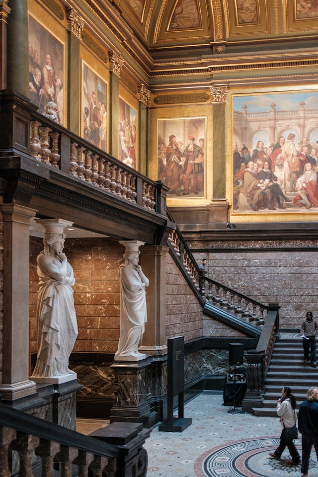
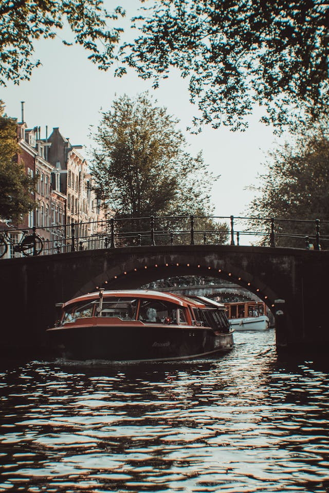

Rijksmuseum
 Het nationaal museum gelegen in Amsterdam-Zuid met meesterwerken van Rembrandt, Vermeer en andere Nederlandse kunstenaren. Als je van kunst en geschiedenis houdt is het een aanrader!
 Het nationaal museum gelegen in Amsterdam-Zuid met meesterwerken van Rembrandt, Vermeer en andere Nederlandse kunstenaren. Als je van kunst en geschiedenis houdt is het een aanrader!
 Een grachtenrondvaart is een boottocht door de historische grachten van Amsterdam. Je vaart langs prachtige herenhuizen, bruggen, kerken en andere historische gebouwen. Het is een toeristische attractie dat zeker gedaan moet worden als je in Amsterdam bent.